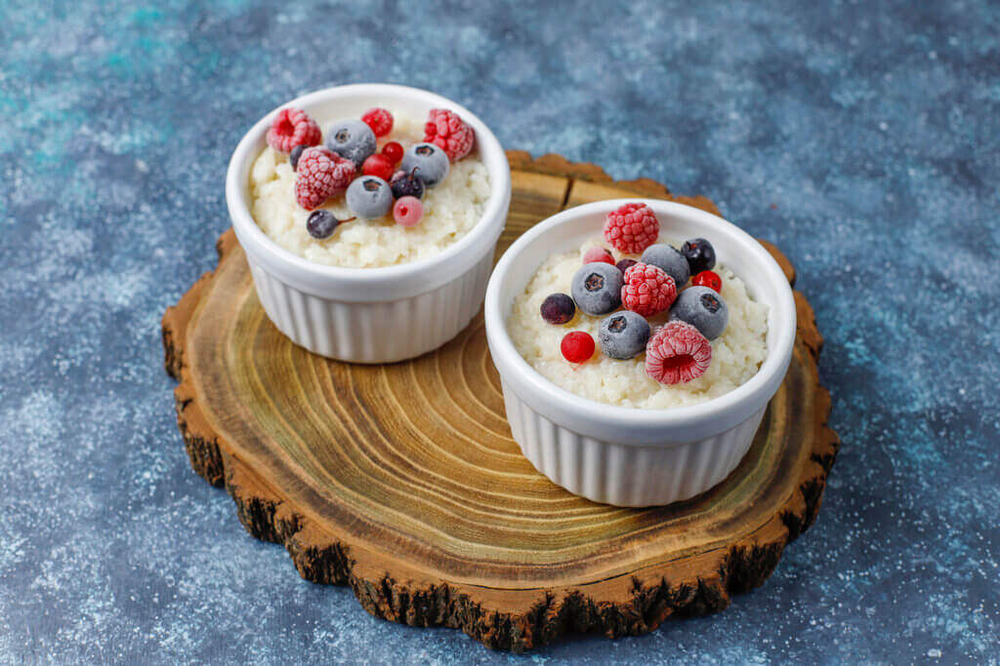

Arroz con leche
50 min
4 Porciones
2 Dificultad
El arroz con leche que se consume en México es una receta que se fue modificando con el paso del tiempo pero se tiene registro de que era consumido en Europa por los nobles y después por los pobladores. Se cree que fue traído a latinoamerica en la conquista y por emigrantes europeos. En México se hizo muy popular debido a la gran cantidad de sembradíos que se tenían y así se podían elaborar infinidad de platillos y postres con arroz.
Ingredientes
- 1 taza de arroz lavado
- 1 ramita de canela
- 1 lt de leche de vaca descremada
- 1 lata de leche evaporada
- 1 lata de leche condensada
- 2 tazas de agua
- 1 taza de frutos rojos
Preparación
- Colocar en una olla la taza de arroz con el agua y la ramita de canela a fuego medio-bajo hasta que el arroz este cocido pero sin romperse.
- Cuando el arroz este cocido agregar la leche descremada, condensada y evaporada y baja el fuego.
- Apaga cuando suelte el primer hervor y deja enfriar.
- Sirve en platos y decora con los frutos rojos.
¿Quieres ver más recetas?